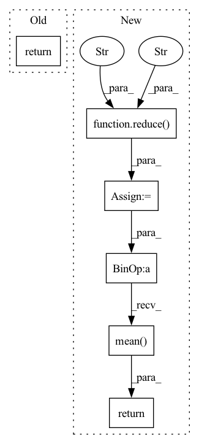

Pattern ID :30656
Before Change
pred = model_output
loss = self.loss_fn(pred, noise)
return loss
def forward(
self,After Change
pred = model_output
losses = self.loss_fn(pred, noise, reduction = "none")
losses = reduce( losses, "b ... -> b" , "mean" )
if isinstance(noise_scheduler, GaussianDiffusionContinuousTimes) and self.p2_loss_weight_gamma > 0:
loss_weight = (self.p2_loss_weight_k + maybe_log_snr.exp()) ** -self.p2_loss_weight_gamma
losses = losses * loss_weight
return losses.mean()
def forward(
self,
image,In pattern: SUPERPATTERN
Frequency: 4
Non-data size: 6
Instances Fragment ID: 90485456
Project Name: lucidrains/imagen-pytorch
Commit Name: 2b94a63699cf7c5b5b14a512f68bea24e980201b
Time: 2022-06-10
Author: lucidrains@gmail.com
File Name: imagen_pytorch/imagen_pytorch.py
M Class Name: Imagen
N Class Name: Imagen
M Method Name: p_losses(4)
N Method Name: p_losses(4)
M Parent Class: nn.Module
N Parent Class: nn.Module
M File Name: imagen_pytorch/imagen_pytorch.py
N File Name: imagen_pytorch/imagen_pytorch.py
M Start Line: 1481
M End Line: 1506
N Start Line: 1490
N End Line: 1521
Before Change
elif self.objective == "v":
target = alpha * noise - sigma * img
return F.mse_loss(pred, target)
// dataset classes
After Change
target = alpha * noise - sigma * img
loss = F.mse_loss(pred, target, reduction = "none")
loss = reduce( loss, "b ... -> b" , "mean" )
// min snr loss weight
snr = (alpha * alpha) / (sigma * sigma)
maybe_clipped_snr = snr.clone()
if self.min_snr_loss_weight:
maybe_clipped_snr.clamp_(min = self.min_snr_gamma)
if self.objective == "eps":
loss_weight = maybe_clipped_snr / snr
elif self.objective == "x0":
loss_weight = maybe_clipped_snr
elif self.objective == "v":
loss_weight = maybe_clipped_snr / (snr + 1)
return (loss * loss_weight).mean()
// dataset classes
class Dataset(Dataset): Fragment ID: 90485457
Project Name: lucidrains/recurrent-interface-network-pytorch
Commit Name: 77e4ced5cd8d091acae31ad2cb19a32f64a4eb3a
Time: 2023-03-18
Author: lucidrains@gmail.com
File Name: rin_pytorch/rin_pytorch.py
M Class Name: GaussianDiffusion
N Class Name: GaussianDiffusion
M Method Name: forward(2)
N Method Name: forward(2)
M Parent Class: nn.Module
N Parent Class: nn.Module
M File Name: rin_pytorch/rin_pytorch.py
N File Name: rin_pytorch/rin_pytorch.py
M Start Line: 812
M End Line: 823
N Start Line: 819
N End Line: 850
Before Change
elif self.pred_objective == "eps":
target = noise
return F.mse_loss(model_out, target)
def forward(self, img, *args, **kwargs):
b, c, h, w, device, img_size, = *img.shape, img.device, self.image_sizeAfter Change
loss = F.mse_loss(model_out, target, reduction = "none")
loss = reduce( loss, "b ... -> b" , "mean" )
snr = log_snr.exp()
maybe_clip_snr = snr.clone()
if self.min_snr_loss_weight:
maybe_clip_snr.clamp_(min = self.min_snr_gamma)
if self.pred_objective == "v":
loss_weight = maybe_clip_snr / (snr + 1)
elif self.pred_objective == "eps":
loss_weight = maybe_clip_snr / snr
return (loss * loss_weight).mean()
def forward(self, img, *args, **kwargs):
b, c, h, w, device, img_size, = *img.shape, img.device, self.image_size
assert h == img_size and w == img_size, f"height and width of image must be {img_size}" Fragment ID: 90485459
Project Name: lucidrains/denoising-diffusion-pytorch
Commit Name: e6f2d01d453fc2597881ca477bdd7d545f93490a
Time: 2023-03-17
Author: lucidrains@gmail.com
File Name: denoising_diffusion_pytorch/simple_diffusion.py
M Class Name: GaussianDiffusion
N Class Name: GaussianDiffusion
M Method Name: p_losses(4)
N Method Name: p_losses(4)
M Parent Class: nn.Module
N Parent Class: nn.Module
M File Name: denoising_diffusion_pytorch/simple_diffusion.py
N File Name: denoising_diffusion_pytorch/simple_diffusion.py
M Start Line: 668
M End Line: 678
N Start Line: 675
N End Line: 701
Before Change
raise ValueError(f"unknown objective {self.objective}")
loss = self.loss_fn(model_out, target)
return loss
def forward(self, img, *args, **kwargs):
b, c, h, w, device, img_size, = *img.shape, img.device, self.image_sizeAfter Change
raise ValueError(f"unknown objective {self.objective}")
loss = self.loss_fn(model_out, target, reduction = "none")
loss = reduce( loss, "b ... -> b (...)" , "mean" )
loss = loss * extract(self.p2_loss_weight, t, loss.shape)
return loss.mean()
def forward(self, img, *args, **kwargs):
b, c, h, w, device, img_size, = *img.shape, img.device, self.image_size
assert h == img_size and w == img_size, f"height and width of image must be {img_size}" Fragment ID: 90485454
Project Name: lucidrains/denoising-diffusion-pytorch
Commit Name: 8b30be80429a1b8e254074e500df8f0df87db0f6
Time: 2022-06-14
Author: lucidrains@gmail.com
File Name: denoising_diffusion_pytorch/denoising_diffusion_pytorch.py
M Class Name: GaussianDiffusion
N Class Name: GaussianDiffusion
M Method Name: p_losses(4)
N Method Name: p_losses(4)
M Parent Class: nn.Module
N Parent Class: nn.Module
M File Name: denoising_diffusion_pytorch/denoising_diffusion_pytorch.py
N File Name: denoising_diffusion_pytorch/denoising_diffusion_pytorch.py
M Start Line: 531
M End Line: 532
N Start Line: 537
N End Line: 541